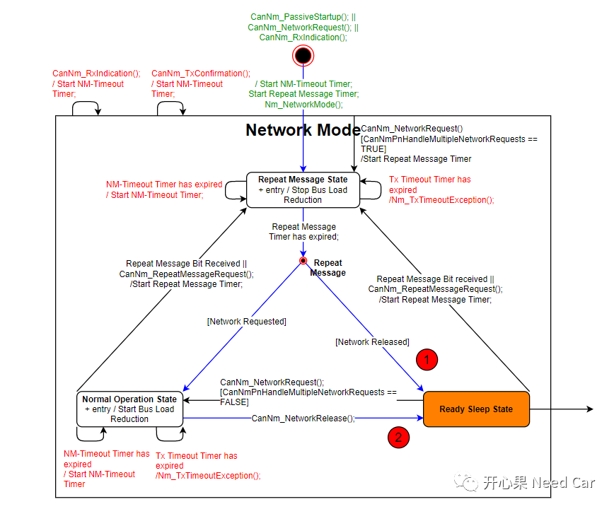
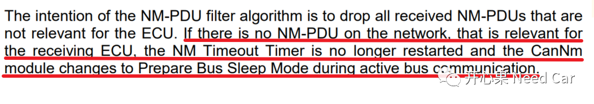
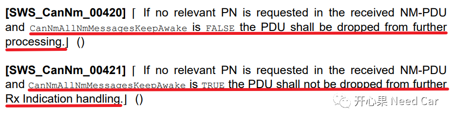
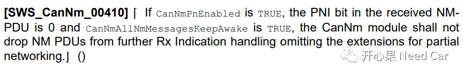
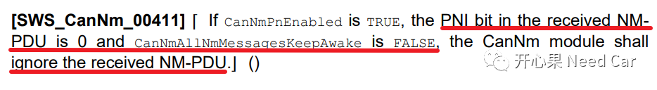

进一步细化问题:"如果总线上某个节点进入了RSS(Ready Sleep State)状态，周期性地接收到其他节点发送的网络管理报文，此节点会进入PBSM（Prepare Bus-Sleep Mode），进而休眠吗?"
提示：基于CAN总线讨论
节点如果想进入RSS状态，有两条路径：
第一、由RMS（Repeat Message State）进入RSS状态
第二、由NOS（Normal Operation State）进入RSS状态
如下所示：

对于上述两种进入RSS状态的方式，实质由节点的网络类型决定：
节点网络类型是Passive Mode：节点只能由RMS进入RSS
节点网络类型非Passive Mode(Active Mode)：如果节点是被动唤醒（比如：收到网络管理报文唤醒），节点只能由RMS进入RSS；如果节点是主动唤醒（比如：KL15硬线唤醒，外部定时器主动触发唤醒等），则节点由RMS进入NOS状态（主动请求网络），在NOS状态下，收到上层进入RSS的主动请求（主动调用接口CanNm_NetworkRelease()），进入RSS状态。
回答这个问题，我们需要先确定当前节点是否使用PN（Partial Network）功能。
1、节点没有PN功能
对于没有使用PN功能的节点，在RSS状态下收到其他节点发送的NM Msg，会重置NM-Timeout Timer，让节点保持在RSS状态，也就是说：网络管理报文可以让节点保持在RSS状态，维持正常通信，节点不休眠；
2、节点具有PN功能
如果节点有PN功能，还需要关注配置参数CanNmAllNmMessagesKeepAwake的使能情况。
如果PNI = 1，且CanNmAllNmMessagesKeepAwake = TRUE，在RSS状态下收到NM Msg，当前节点需要重置NM-Timeout Timer，节点的网络状态保持在RSS。如果与节点相关的所有PNC = 0，不关联PNC的发送报文保持发送。如果与节点相关的PNC = 1，关联此PNC的发送报文和不关联PNC的发送报文保持发送；
如果PNI = 1，CanNmAllNmMessagesKeepAwake = FALSE，在RSS状态下收到NM Msg，与节点相关的PNC均为0，当前节点不重置NM-Timeout Timer，当NM-Timeout Timer = 0时，节点进入PBSM状态，如果CANNM_WAIT_BUS_SLEEP_TIME超时，节点进入BSM(Bus-Sleep Mode)，节点休眠。


如果PNI = 0，且CanNmAllNmMessagesKeepAwake = TRUE，在RSS状态下收到NM Msg，当前节点需要重置NM-Timeout Timer，节点的网络状态保持在RSS，Autosar解释如下所示：

如果PNI = 0，且CanNmAllNmMessagesKeepAwake = FALSE，在RSS状态下收到NM Msg，当前节点不需要重置NM-Timeout Timer，当NM-Timeout Timer = 0，节点进入PBSM，如果CANNM_WAIT_BUS_SLEEP_TIME超时，节点进入BSM(Bus-Sleep Mode)，节点休眠，Autosar解释如下所示：

也就是说，在RSS状态下，节点即使周期性接收到其他节点发送的网络管理报文，节点也可能休眠。如上，就是本文的答案。提示：某些OEM中会要求：CanNmAllNmMessagesKeepAwake的设置与CAN transceiver的选型有关。比如：如果选择具有wakeup CAN的transceiver，CanNmAllNmMessagesKeepAwake = FALSE；如果选择没有wakeup CAN的transceiver，CanNmAllNmMessagesKeepAwake = TRUE。

参考资料
SIMPLE TITLE
往期精彩回顾